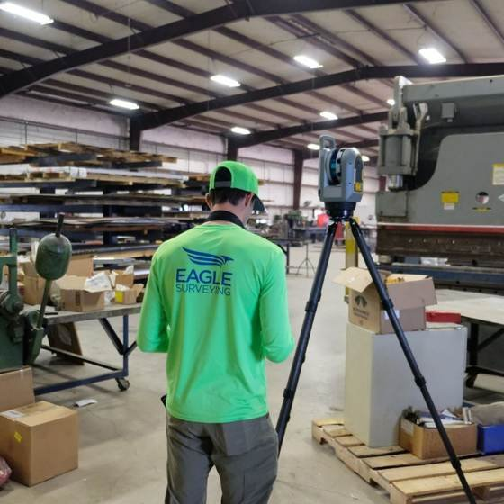

Terrestrial Laser Scanning
Ground-based 3D laser scanning captures the exact geometry of buildings, facilities, and structures to millimeter-level detail at close range. Delivered as georeferenced point clouds and scan-to-CAD/BIM data tied to project control, ready for design, coordination, and verification.
 Millions of laser pulses per second, every one recorded with X, Y, Z and intensity.
Millions of laser pulses per second, every one recorded with X, Y, Z and intensity.
Where photography stops being accurate enough.
Terrestrial laser scanning uses a tripod-mounted scanner that rotates and fires millions of laser pulses per second, measuring the precise distance to every visible surface and recording each as a point with X, Y, Z coordinates and intensity, with color imagery for visualization. The result is a high-density 3D point cloud that captures the exact geometry of a structure or site to millimeter-level detail at close range. TLS is the reality capture method of choice when you need dimensional precision on the built environment: existing buildings, industrial facilities, data centers, bridges, tanks, structural steel, and congested MEP spaces.
Eagle Surveying registers each scan and ties the dataset to survey-grade control, then delivers registered point clouds in the formats your team needs (E57, RCP/RCS, LAS, PTS) along with scan-to-CAD and existing-conditions deliverables. Because we are a surveying firm, the point cloud is georeferenced and tied to project control, making it suitable for design, coordination, clash detection workflows, and as-built verification rather than just visualization. Eagle Surveying provides terrestrial laser scanning throughout Texas, including the Dallas-Fort Worth metroplex and Central Texas.
The cloud is the start. The deliverable is what your team models from.

Scan-to-CAD
Scan-to-CAD converts measured point-cloud data into two-dimensional or three-dimensional CAD information such as floor plans, elevations, sections, structural geometry, site features, or existing-condition linework. The required views, features, tolerance, coordinate system, and file format are established in the project scope.
Scan-to-CAD is commonly used for renovation design, industrial tie-ins, facility documentation, and as-built records.

Scan-to-BIM
Scan-to-BIM is a workflow in which a registered point cloud is used as the spatial basis for Building Information Modeling. The point cloud documents existing conditions, and the agreed BIM scope determines what elements are modeled and to what level of detail.
Eagle Surveying can provide georeferenced point clouds and agreed scan-to-BIM support or data products; the required model content, software format, and level of development should be defined before work begins.

As-built laser scan
An as-built laser scan uses terrestrial laser scanning to document the actual visible geometry of completed or existing construction. It can capture walls, floors, ceilings, structural elements, equipment, piping, MEP systems, and other accessible features at high density.
The resulting point cloud or derived CAD information provides a record of existing conditions for closeout, renovation, coordination, maintenance, or comparison with design information.

Digital twin support
Reality Capture data can provide the measured spatial foundation for digital twin workflows. Depending on the project, Eagle Surveying may provide point clouds, CAD-ready information, 3D models, repeat captures, or other existing-condition data that an owner, design team, VDC group, or facility platform uses within a digital twin.
The creation, maintenance, attributes, integrations, and operational management of a full digital twin must be specifically defined in the agreed scope.
Nine jobs a scan crew gets called out for.


 {{ useAlt }}
{{ useAlt }}
Congested spaces, live facilities, tight tolerances.
On large sites, terrestrial scanning may be combined with aerial LiDAR, photogrammetry, conventional surveying, or 360° documentation — the collection plan, access, safety requirements, control, and deliverables are established for the specific assignment.
Handed over in the format your software already opens.
Point clouds, control, and what a scan can carry.
All Reality Capture services →What is 3D laser scanning?+
3D laser scanning is a Reality Capture method that measures millions of points on visible surfaces to create a dense three-dimensional point cloud. It is used to document buildings, structures, industrial facilities, data centers, bridges, tanks, structural steel, MEP spaces, and other built environments. The resulting data can support existing-condition drawings, scan-to-CAD or scan-to-BIM workflows, coordination, renovations, and as-built documentation and comparison with design information.
How does Terrestrial Laser Scanning work?+
Terrestrial Laser Scanning uses a ground-based scanner that rotates and measures the distance to visible surfaces around the instrument. Multiple scan positions are registered together and tied to project control when required. The combined point cloud creates a detailed three-dimensional record of the site or structure. Project accuracy, scan density, coverage, control, file formats, and downstream deliverables are established from the intended design or documentation use.
Can Terrestrial Laser Scanning document rail and transit infrastructure?+
Yes. Terrestrial laser scanning can document platforms, stations, tunnels, structural elements, track-adjacent features, bridge components, clearance conditions, and other visible rail or transit infrastructure. Eagle Surveying's Reality Capture team includes professionals with prior railroad and transit surveying experience. The collection plan, access, safety requirements, control, and deliverables are established for the specific rail or transit assignment.
How is 360° documentation different from 3D laser scanning?+
360° documentation is primarily a visual record. It allows users to navigate a site remotely and compare conditions over time, but it is not intended to replace survey-grade measurement. Terrestrial laser scanning creates a dense measured point cloud for dimensional work, CAD, BIM, and as-built documentation and comparison with design information. Eagle Surveying recommends 360° capture for visual documentation and laser scanning when dimensional accuracy is required.
What is a point cloud?+
A point cloud is a dense set of measured three-dimensional points representing visible surfaces and features within a site, building, structure, or object. Point clouds may also include intensity values and color imagery. They are commonly created with LiDAR, photogrammetry, or terrestrial laser scanning and are used for existing-condition documentation, surface modeling, CAD production, BIM workflows, dimensional review, as-built documentation, and engineering design.
What a scan assignment usually sits beside.

Send us the building. We'll tell you what the scan can carry.
Terrestrial laser scanning throughout Texas, including the Dallas-Fort Worth metroplex and Central Texas.